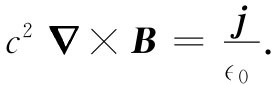

我们已经看到，诸如在由一磁铁所产生的磁场存在的情况下，就有力作用于导线上。从作用等于反作用这一原理出发，我们也许会期望，当导线中有电流通过时应当有一个力作用于磁场之源，也即作用于磁铁上 [1] 。确实有这样的力存在，这可由置于载流导线附近的一根磁针的偏转而看出来。原来我们知道，磁铁会感受到来自其他磁铁的作用力，因而这就意味着，当导线中有电流时，这导线本身就会产生磁场。于是，运动电荷确实会产生 磁场。现在我们愿意尝试找出如何确定这种磁场产生的规律。问题是：给出电流后，它能形成什么样的磁场？对这一问题的解答由实验上的三个决定性实验和安培在理论上所做的辉煌论证而确定了下来。我们将绕过这一有趣的历史进程，而只是简单地说说大量实验事实已经证实了麦克斯韦方程组的有效性。我们将把它们作为起点。若在这些方程中省略含有时间微商的那些项，则可得到关于静磁学 的方程组：
▽·B=0 （13.12）
和
 （13.13）
这些方程仅在一切电荷密度都恒定、一切电流都稳恒，使得电场和磁场都不随时间而变——一切场都呈现“静止”状态——时才正确。
应当指出，认为有像静磁这种情况是相当危险的，因为毕竟总得有电流才能获得磁场——而电流则只能来自运动着的电荷。因此，“静磁”只是一种近似，它指的是拥有大量 运动电荷、而我们又可将其近似成定常 流动的一种特殊的动力情况。只有这样才能谈论一种不随时间而变的电流密度j。这一题目应当更准确地称为关于恒定电流的研究。假定所有的场都恒定，我们从那完整的麦克斯韦方程组（2.41）中省略了一切含有∂E/∂t和∂B/∂t之项后，便可获得上面两个方程式（13.12）和（13.13）。并注意：由于任何矢量旋度的散度均必须等于零，所以式（13.13）便要求▽·j=0。根据式（13.8），这只有在∂ρ/∂t为零时才正确。但如果E不随时间而变，这便是必然的了，因而我们的一些假设都是一致的。
▽·j=0这一要求的含意是，只能容许在首尾相连的路线中才有流动着的电荷。例如，它们可以在构成一个完整回路——称为电路——的导线中流动。当然，这种电路可以包含维持电荷流动的发电机或电池组。但不容许包括正在被充电或放电的电容器（当然，我们以后还将推广到包括那些动态场，但目前打算先讨论较简单的恒定电流情况）。
现在，让我们来看看式（13.12）和（13.13）的含意如何。第一个式子说明B的散度为零。拿它与静电学中的类似方程▽·E=ρ/∈0 作比较，就可以断定，不会有电荷的磁类似物，即没有 能从中产生出B线的磁荷 。如果我们用矢量场B的“线”来考虑，则这些线将永远不可能突然出现，也永远不可能终止。那么，它们是从哪里来的呢？在有 电流的地方 磁场才会“出现”；它们有一个正比于电流密度的旋度 。无论哪里有电流，那里就有构成回路的磁力线环绕着该电流。由于B线无始无终，这些线便经常能够兜绕回来以形成闭合回路。但也有B线不是简单闭合回路的那些复杂情况。可是，无论情况如何，它们永远不会有从一些点上散发出去。迄今为止，还没有发现过磁荷，因而▽·B=0。这一结果，不仅对于静磁场正确，甚至对于动态场也始终 正确。
图13-6 B切向分量的线积分等于▽×B法向分量的面积分
B场与电流的关系包含在式（13.13）中。这里有一个新的情况与静电学大不相同，在那里我们曾有过▽×E=0。这个方程意味着E环绕着任一闭合回路的线积分为零：
∮回路 E·ds=0.
这一结果是由斯托克斯定理得到的，该定理说：任一个 矢量场沿任一闭合曲线的线积分，等于该矢量旋度的法向分量的面积分（对以该闭合回路为其边缘的任何表面求积分）。把同样这个定理应用于磁场矢量并利用在图13-6上所示的那些符号，则可得
∫Γ B·ds=∫（▽×B）·ndS. （13.14）
由式（13.13）取B的旋度，便有
根据式（13.5），对j的积分即是通过S面的总电流I。由于是对恒定电流来说的，所以通过S面的电流与该面的形状无关，仅仅要求该面由Γ曲线所包围，因而人们往往说成是“穿过Γ回路的电流”。这样，我们就有一个普遍定律：围绕任何闭合曲线的B的环流，等于穿过该回路的电流I除以∈0 c2 ：
这一定律——叫安培定律 ——在静磁学中的作用与高斯定律在静电学中的作用相同。但是只有安培定律仍不能由电流确定B。一般说来，还必须用到▽·B=0。然而，正如我们将在下一节中见到的，在具有某些简单对称性的特殊情况下仍可以用它来求磁场。